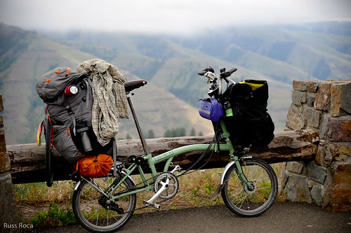

Making memories is one of the most cherished aspects of traveling with WomanTours.
Taking photos and shooting videos are two ways to keep those memories intact.
So too are blogs and social media posts. But I'd like to make a shout out for the
low-tech method of documenting your personal bike tour experiences: the travel journal or diary.